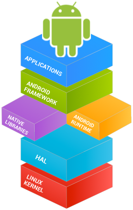
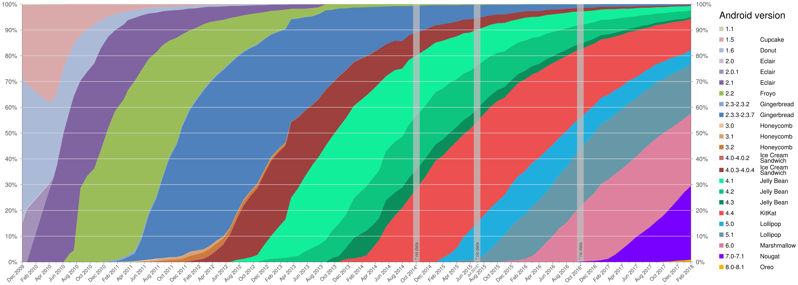
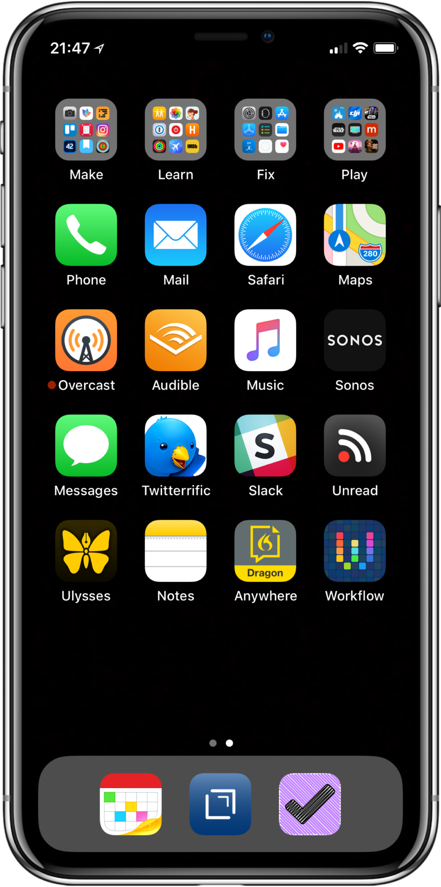
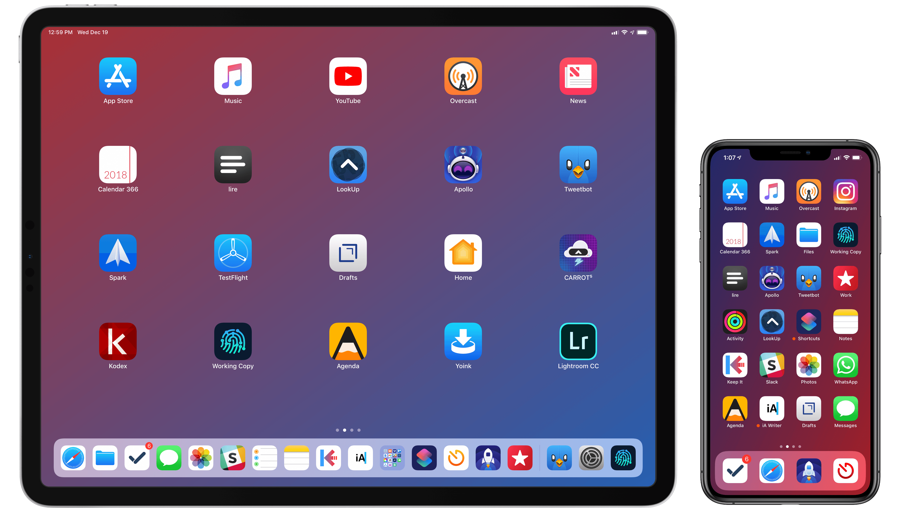
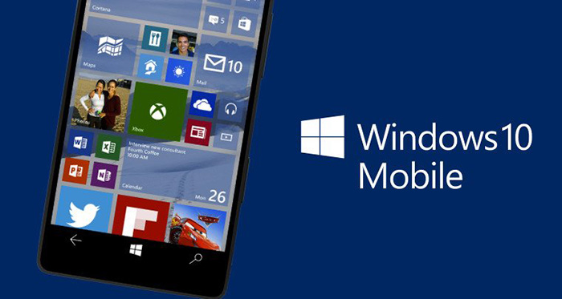
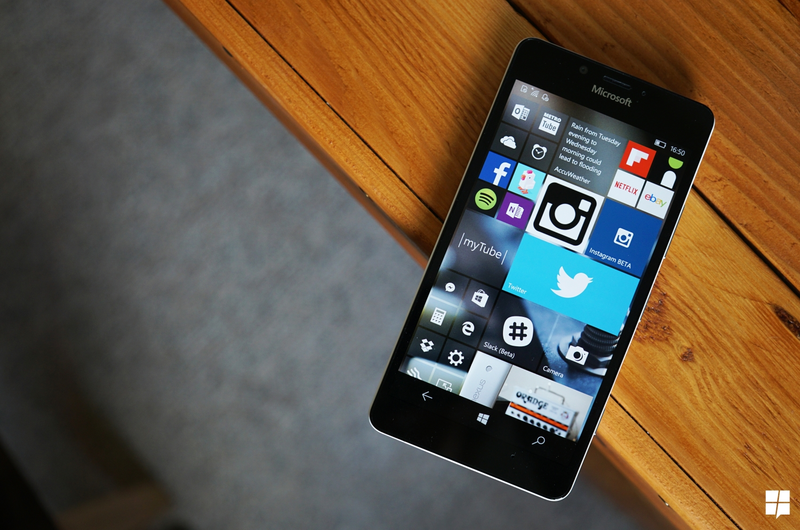
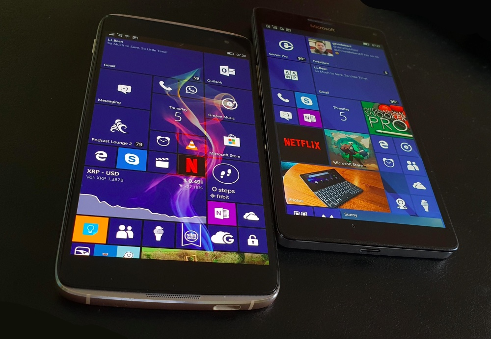

Major Mobile Operating Systems:
-
Android:
Android is a mobile operating system developed by Google. It is based on a modified version of the Linux kernel and other open source software, and is designed primarily for touchscreen mobile devices such as smartphones and tablets.
In addition, Google has further developed Android TV for televisions, Android Auto for cars, and Wear OS for wrist watches, each with a specialized user interface. Variants of Android are also used on game consoles, digital cameras, PCs and other electronics.
Initially developed by Android Inc., which Google bought in 2005, Android was unveiled in 2007, with the first commercial Android device launched in September 2008.

The operating system has since gone through multiple major releases, with the current version being 9 "Pie", released in August 2018. The core Android source code is known as Android Open Source Project (AOSP), and is primarily licensed under the Apache License.
Android is also associated with a suite of proprietary software developed by Google, called Google Mobile Services (GMS) that very frequently comes pre-installed in devices
It usually includes the Google Chrome web browser and Google Search and always includes core apps for services such as Gmail, as well as the application store and digital distribution platform Google Play, and associated development platform.

These apps are licensed by manufacturers of Android devices certified under standards imposed by Google, but AOSP has been used as the basis of competing Android ecosystems, such as Amazon.com's Fire OS,
They use their own equivalents to GMS.Android has been the best-selling OS worldwide on smartphones since 2011 and on tablets since 2013.
As of May 2017, it has over two billion monthly active users, the largest installed base of any operating system, and as of December 2018, the Google Play store features over 2.6 million apps.
Android market share:

-
iOS:

iOS (formerly iPhone OS) is a mobile operating system created and developed by Apple Inc. exclusively for its hardware.
It is the operating system that presently powers many of the company's mobile devices, including the iPhone, iPad, and iPod Touch. It is the second most popular mobile operating system globally after Android.
Originally unveiled in 2007 for the iPhone, iOS has been extended to support other Apple devices such as the iPod Touch (September 2007) and the iPad (January 2010). As of March 2018, Apple's App Store contains more than 2.1 million iOS applications, 1 million of which are native for iPads.These mobile apps have collectively been downloaded more than 130 billion times.

The iOS user interface is based upon direct manipulation, using multi-touch gestures. Interface control elements consist of sliders, switches, and buttons. Interaction with the OS includes gestures such as swipe, tap, pinch, and reverse pinch, all of which have specific definitions within the context of the iOS operating system and its multi-touch interface.
Internal accelerometers are used by some applications to respond to shaking the device (one common result is the undo command) or rotating it in three dimensions (one common result is switching between portrait and landscape mode).

Apple has been significantly praised for incorporating thorough accessibility functions into iOS, enabling users with vision and hearing disabilities to properly use its products.Major versions of iOS are released annually. The current version, iOS 12, was released on September 17, 2018.
It is available for all iOS devices with 64-bit processors; the iPhone 5S and later iPhone models, the iPad (2017), the iPad Air and later iPad Air models, all iPad Pro models, the iPad Mini 2 and later iPad Mini models, and the sixth-generation iPod Touch.
On all recent iOS devices, iOS regularly checks on the availability of an update, and if one is available, will prompt the user to permit its automatic installation.
-
Windows 10 Mobile:

Windows 10 Mobile is a mobile operating system developed by Microsoft, released in 2015. Although it is the successor of Windows Phone 8.1, it is an edition of Windows 10 running on devices that have less than a 9-inch screen, as a result of Microsoft's plans to unify Windows families across multiple device classes.
Windows 10 Mobile aims to provide greater consistency with its counterpart for personal computers, including more extensive synchronization of content, a new universal application platform that allows one app to run on multiple Windows 10 devices.
It includes devices such as PCs, mobile devices and Xbox, as well as the capability, on supported hardware, to connect devices to an external display and use a "PC-like" interface with mouse and keyboard input support.

Microsoft has built tools for developers to easily port some iOS apps with minimal modifications. Windows Phone 8.1 smartphones are eligible for upgrade to Windows 10 Mobile, pursuant to manufacturer and carrier support.
Some features vary depending on hardware compatibility.Windows 10 Mobile was designed for use on smartphones and phablets running on ARM processor architectures.
Windows 10 Mobile entered public beta for selected Lumia brand smartphones on February 12, 2015. The first Lumia smartphones powered by Windows 10 Mobile were released on November 20, 2015 while eligible Windows Phone devices began receiving updates to Windows 10 Mobile on March 17, 2016, pursuant to manufacturer and carrier support.

The platform never achieved any significant degree of popularity or market share in comparison to Android or iOS. By 2017, Microsoft had already begun to downplay Windows 10 Mobile
Having discontinued active development due to a lack of user and developer interest in the platform, and focusing more on serving incumbent mobile operating systems as part of its software and services strategy.Windows 10 Mobile will be deemed end-of-life on December 10, 2019.